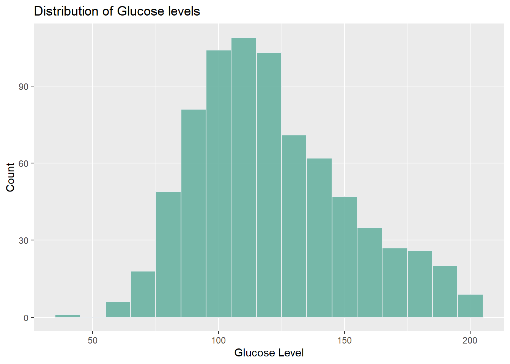
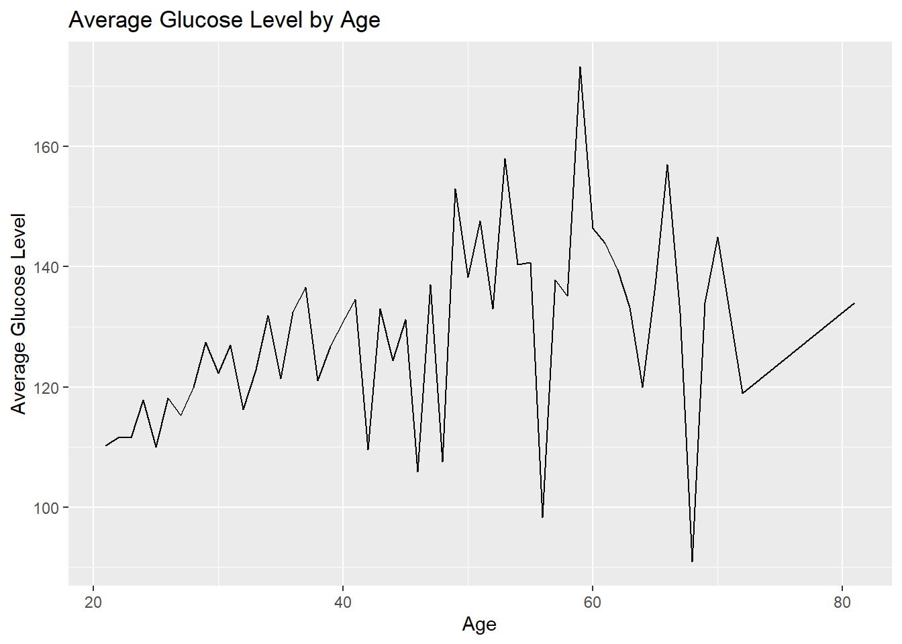
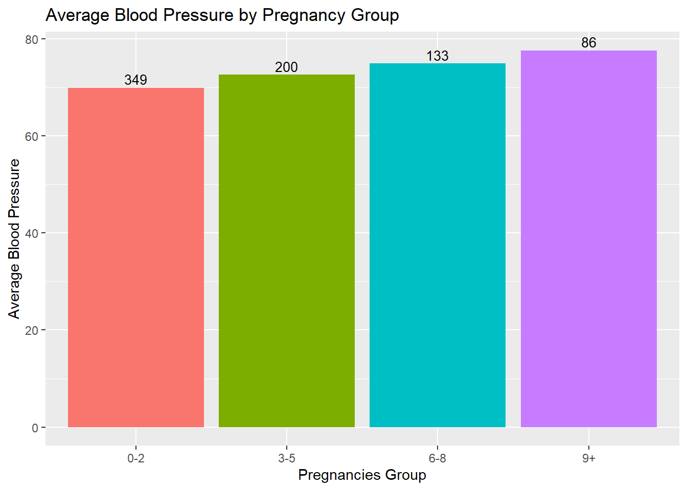
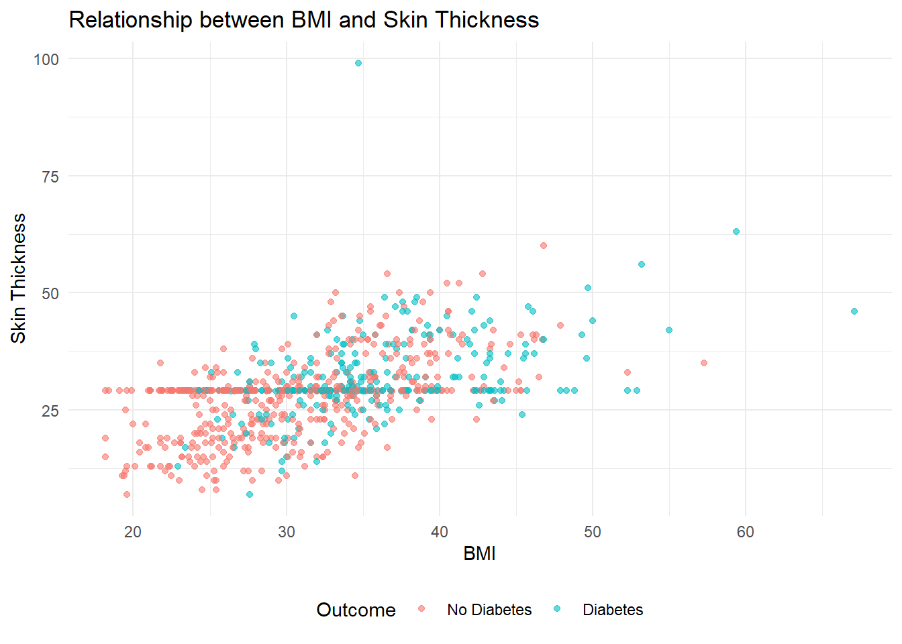
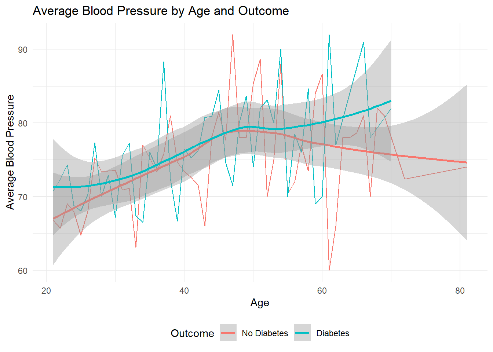
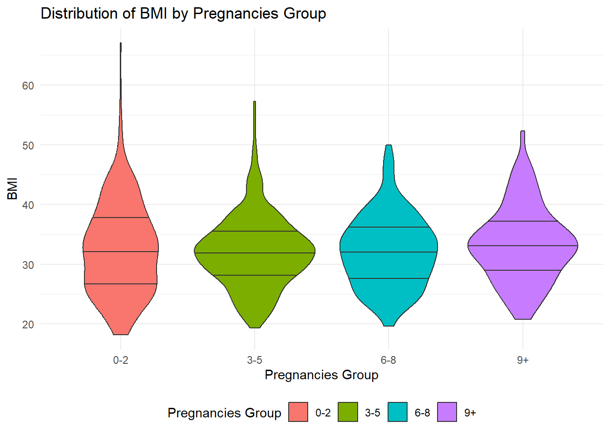
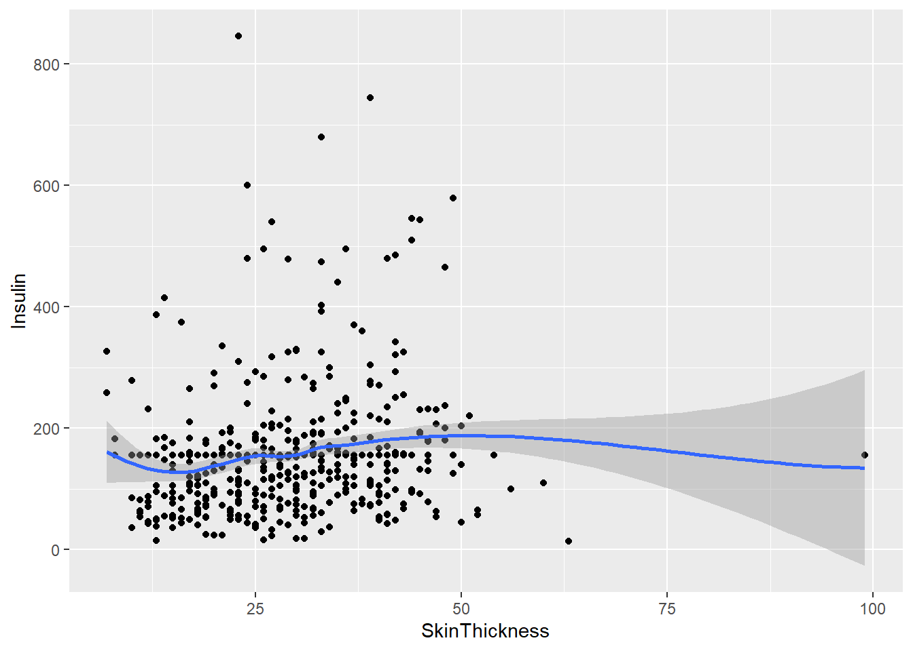

# This line loads the tidyverse package, which includes several useful packages for data manipulation and visualization.
library(tidyverse)
# This line loads the ggplot2 package, which is a powerful library for creating visualizations.
library(ggplot2)
# suppressing large warning messages while run time
knitr::opts_chunk$set(echo = TRUE, warning=FALSE, message=FALSE)Exploring Factors Influencing Diabetes Diagnosis in the Pima Indian Population
final_Project
final_project_data_description
Load required packages
Introduction
This project focuses on exploring the factors that influence the presence and absence of diabetes in the Pima Indian population by analyzing variables such as age, pregnancies, BMI, skin thickness, glucose levels and insulin level.By analyzing the data using visualizations, we aim to gain insights and understand the relationships between different variables and the outcome of diabetes in the specific Pima Indian population. The research question guiding this study is: How do factors such as age, pregnancies, BMI, skin thickness, glucose levels, and insulin levels relate to the presence or absence of diabetes in the Pima Indian population? To address this, we utilize a comprehensive dataset collected by the National Institute of Diabetes and Digestive and Kidney Diseases. The dataset specifically includes data from females of Pima Indian heritage aged 21 or older. Each individual in the dataset represents a case or unit of analysis.
Background
Diabetes is a prevalent chronic disease that disproportionately affects the Pima Indian population and understanding the factors contributing to diabetes in this community is crucial for developing effective startegies and improving health outcomes. Previous research has identified age, pregnancies, BMI, skin thickness, glucose levels, and insulin levels as significant factors related to diabetes. By analyzing these variables, we can unfold the complex relationships associated with diabetes onset in the Pima population. The findings of this study help healthcare providers and researchers about the specific risk factors faced by the community and develop preventive and personalized healthcare approaches. Additionally, the insights gained from this research can contribute to advancing our understanding of diabetes and shape future research directions globally.By exploring the multifaceted factors influencing diabetes seeks to improve the lives of individuals affected by diabetes and benefit broader populations affected by this chronic disease.
Dataset Description
The dataset used in this project was originally collected by the National Institute of Diabetes and Digestive and Kidney Diseases. It provides a comprehensive collection of medical data specifically focused on females of Pima Indian heritage who are 21 years of age or older. Each row in the dataset represents an individual patient, making them the unit of analysis or “case” in this study with the variables providing information on factors such as pregnancies, glucose levels, blood pressure, skin thickness, insulin levels, BMI, diabetes pedigree function, and age. The dataset enables the examination of these variables in relation to the presence or absence of diabetes in the Pima Indian population.
This study investigates the factors associated with diabetes by analyzing a comprehensive set of variables. The number of pregnancies a person has had is examined to understand the potential influence of pregnancy on diabetes risk. Glucose levels, measured through an Oral Glucose Tolerance Test, provide insights into the relationship between glucose metabolism and diabetes. Diastolic blood pressure values are considered to assess any correlation with diabetes. The thickness of the triceps skin fold is measured to evaluate its association with diabetes. Serum insulin concentration, measured two hours after consuming a glucose solution, is examined as a potential indicator of diabetes. Body mass index (BMI) is calculated based on weight and height to estimate body fat and its impact on diabetes risk. The diabetes pedigree function provides an estimation of the genetic influence of diabetes based on family history. Age is also considered as a variable to explore the relationship between age and diabetes. The outcome variable indicates whether the patient has diabetes or not, with binary values of 1 (positive for diabetes) and 0 (negative for diabetes). By analyzing these variables in relation to the outcome, this study aims to identify potential predictors of diabetes.
Read the dataset
diabetes = read.csv("~/601_Spring_2023/posts/_data/Diabetes_Dataset.csv")Get the dimensions of the “diabetes” dataset
dim(diabetes) # Returns the number of rows and columns in the dataset[1] 768 9The “diabetes” dataset has 768 rows and 9 columns, indicating 768 individual observations and 9 variables.
Selecting the first 20 rows of the “diabetes” dataset and displaying all columns for those rows
diabetes[1:20,] The output shows a subset of the diabetes dataset, specifically the first 20 rows where each row corresponds to an individual and includes information such as the number of pregnancies, glucose levels, blood pressure, skin thickness, insulin levels, BMI, diabetes pedigree function, age, and the outcome.
For the first individual (row 1), they have had 6 pregnancies and have glucose levels of 148 mg/dL, blood pressure of 72 mm Hg, skin thickness of 35 mm, no insulin recorded, a BMI of 33.6, a diabetes pedigree function of 0.627, and an age of 50. The outcome variable indicates that this individual has been diagnosed with diabetes (Outcome = 1). Similarly, each subsequent row provides information about the corresponding individual’s characteristics, including medical measurements and the diabetes outcome. Also, upon examining the table, it is evident that some variables such as Blood Pressure, SkinThickness, and Insulin have 0 values, which are unrealistic in the real world. It is important to note that invalid values can significantly impact the analysis and interpretation of the data. As a part of our data cleansing exercise, it is necessary to remove these records from our data frame before proceeding with further analysis. This ensures that our analysis is based on reliable and meaningful data, thereby improving the accuracy of our findings and conclusions.
Distribution of Outcomes
table(diabetes$Outcome) # Here, value '0' is assigned to "Normal" people and '1'is assigned to people with "Diabetes"
0 1
500 268 The dataset contains 500 individuals labeled as “0” (without diabetes) and 268 individuals labeled as “1” (with diabetes), indicating the distribution of diabetes cases within the dataset. Notably, this distribution reveals an imbalance, as the majority class (“0”) has 500 instances, while the minority class (“1”) has 268 instances.
Diabetes Dataset Structure
str(diabetes) 'data.frame': 768 obs. of 9 variables:
$ Pregnancies : int 6 1 8 1 0 5 3 10 2 8 ...
$ Glucose : int 148 85 183 89 137 116 78 115 197 125 ...
$ BloodPressure : int 72 66 64 66 40 74 50 0 70 96 ...
$ SkinThickness : int 35 29 0 23 35 0 32 0 45 0 ...
$ Insulin : int 0 0 0 94 168 0 88 0 543 0 ...
$ BMI : num 33.6 26.6 23.3 28.1 43.1 25.6 31 35.3 30.5 0 ...
$ DiabetesPedigreeFunction: num 0.627 0.351 0.672 0.167 2.288 ...
$ Age : int 50 31 32 21 33 30 26 29 53 54 ...
$ Outcome : int 1 0 1 0 1 0 1 0 1 1 ...Based on the above we can see that the variables “Pregnancies,” “Glucose,” “BloodPressure,” “SkinThickness,” “Insulin,” “Age,” and “Outcome” are of integer data type, indicating that they represent whole numbers. The variable “BMI”, “DiabetesPedigreeFunction” is of numeric data type, suggesting that it represents decimal numbers. It doesnt appear we have any categorical variables with the exception of our response variable outcome. Also variables, namely “BloodPressure,” “SkinThickness,” “Insulin,” and “BMI,” have inappropriate values, which are represented by 0 in the dataset. These missing values should be handled appropriately to ensure accurate interpretations.
Summary statistics for variables
summary(diabetes[c("Pregnancies", "Glucose", "BloodPressure", "SkinThickness", "Insulin", "BMI", "Age", "Outcome")]) Pregnancies Glucose BloodPressure SkinThickness
Min. : 0.000 Min. : 0.0 Min. : 0.00 Min. : 0.00
1st Qu.: 1.000 1st Qu.: 99.0 1st Qu.: 62.00 1st Qu.: 0.00
Median : 3.000 Median :117.0 Median : 72.00 Median :23.00
Mean : 3.845 Mean :120.9 Mean : 69.11 Mean :20.54
3rd Qu.: 6.000 3rd Qu.:140.2 3rd Qu.: 80.00 3rd Qu.:32.00
Max. :17.000 Max. :199.0 Max. :122.00 Max. :99.00
Insulin BMI Age Outcome
Min. : 0.0 Min. : 0.00 Min. :21.00 Min. :0.000
1st Qu.: 0.0 1st Qu.:27.30 1st Qu.:24.00 1st Qu.:0.000
Median : 30.5 Median :32.00 Median :29.00 Median :0.000
Mean : 79.8 Mean :31.99 Mean :33.24 Mean :0.349
3rd Qu.:127.2 3rd Qu.:36.60 3rd Qu.:41.00 3rd Qu.:1.000
Max. :846.0 Max. :67.10 Max. :81.00 Max. :1.000 The dataset contains information on pregnancies, glucose levels, blood pressure, skin thickness, insulin levels, BMI, age, and the presence or absence of diabetes (outcome). The pregnancies variable ranges from 0 to 17, with a median of 3, indicating that half of the individuals in the dataset had 3 pregnancies. The glucose levels range from 0 to 199 mg/dL, with a median of 117 mg/dL, representing the middle value. The blood pressure readings range from 0 to 122 mm Hg, with a median of 72 mm Hg. The skin thickness measurements range from 0 to 99 mm, with a median of 23 mm. Insulin levels range from 0 to 846 units/ml, with a median of 30.5 units/ml. The BMI values range from 0 to 67.1, with a median of 32.0. The age of the individuals ranges from 21 to 81 years, with a median of 29 years. The outcome variable indicates the presence or absence of diabetes, with approximately 35% of the individuals in the data set being diagnosed with diabetes.
We can see that for many of the independent variables our min value is 0, this is fine for pregnancies but intuitively a value of 0 likely does not make sense for Glucose, Bloodpressure, SkinThickness, Insulin, and BMI.
Data Preprocessing - Handling Invalid Entries in the Diabetes Dataset
zero_indices_glucose <- diabetes$Glucose == 0
zero_indices_bp <- diabetes$BloodPressure == 0
zero_indices_st <- diabetes$SkinThickness == 0
zero_indices_insulin <- diabetes$Insulin == 0
zero_indices_bmi <- diabetes$BMI == 0
mean_glucose <- mean(diabetes$Glucose[!zero_indices_glucose])
mean_bp <- mean(diabetes$BloodPressure[!zero_indices_bp])
mean_st <- mean(diabetes$SkinThickness[!zero_indices_st])
mean_insulin <- mean(diabetes$Insulin[!zero_indices_insulin])
mean_bmi <- mean(diabetes$BMI[!zero_indices_bmi])
diabetes$Glucose[zero_indices_glucose] <- mean_glucose
diabetes$BloodPressure[zero_indices_bp] <- mean_bp
diabetes$SkinThickness[zero_indices_st] <- mean_st
diabetes$Insulin[zero_indices_insulin] <- mean_insulin
diabetes$BMI[zero_indices_bmi] <- mean_bmiTo handle the problem of zero values in the Bloodpressure, BMI, and Glucose columns of the diabetes dataset, we will replace those values with the mean value of each respective column. This process involves iterating through all the columns in the dataset and substituting any invalid (zero) entries with the mean value specific to the corresponding column. By doing this, we ensure that the dataset contains more accurate and meaningful data, improving the reliability of future analyses and modeling tasks.
Verifying Replacement of Invalid Observations with Mean Values
summary(diabetes[c("Pregnancies", "Glucose", "BloodPressure", "SkinThickness", "Insulin", "BMI", "Age", "Outcome")]) Pregnancies Glucose BloodPressure SkinThickness
Min. : 0.000 Min. : 44.00 Min. : 24.00 Min. : 7.00
1st Qu.: 1.000 1st Qu.: 99.75 1st Qu.: 64.00 1st Qu.:25.00
Median : 3.000 Median :117.00 Median : 72.20 Median :29.15
Mean : 3.845 Mean :121.69 Mean : 72.41 Mean :29.15
3rd Qu.: 6.000 3rd Qu.:140.25 3rd Qu.: 80.00 3rd Qu.:32.00
Max. :17.000 Max. :199.00 Max. :122.00 Max. :99.00
Insulin BMI Age Outcome
Min. : 14.0 Min. :18.20 Min. :21.00 Min. :0.000
1st Qu.:121.5 1st Qu.:27.50 1st Qu.:24.00 1st Qu.:0.000
Median :155.5 Median :32.40 Median :29.00 Median :0.000
Mean :155.5 Mean :32.46 Mean :33.24 Mean :0.349
3rd Qu.:155.5 3rd Qu.:36.60 3rd Qu.:41.00 3rd Qu.:1.000
Max. :846.0 Max. :67.10 Max. :81.00 Max. :1.000 After replacing the invalid entries in the columns with their respective mean values, we will check the summary statistics again to confirm whether the replacement was successful. This step allows us to ensure that the invalid observations have been appropriately substituted, making the dataset more reliable for further analysis.
Handling Null Values
diabetes <- na.omit(diabetes)
diabetesna_counts <- colSums(is.na(diabetes))
print(na_counts) Pregnancies Glucose BloodPressure
0 0 0
SkinThickness Insulin BMI
0 0 0
DiabetesPedigreeFunction Age Outcome
0 0 0 We used omit.na() function to remove all rows with NA values in our dataframe. After using this function, we checked for total number of NA values in our dataframe to verify whether there are any NA values still left. We found that the total number of NA values are zero in all columns. By executing these actions, we successfully handled missing values and verified the completeness of our dataframe.
Analysis and Visualization
1. What is the distribution of Glucose levels in the dataset?
ggplot(diabetes, aes(x=Glucose)) +
geom_histogram(binwidth=10, fill="#69b3a2", color="#e9ecef", alpha=0.9) +
labs(title="Distribution of Glucose levels", x="Glucose Level", y="Count")
I used a histogram to visualize the distribution of Glucose levels in the dataset, aiming to understand the spread of Glucose values across different ranges. The x-axis represents Glucose levels, while the y-axis represents the frequency or count of individuals within each range of Glucose levels.
By analyzing the histogram, it is evident that as the Glucose level increases, the count of occurrences also tends to increase. The highest count, around 150, is observed at a Glucose level of 110. However, beyond that point, as the Glucose level continues to rise, the count starts to decrease. This histogram provides valuable insights into the prevalence and distribution of Glucose levels within the dataset, enabling us to identify the most common glucose level.
2. Is there a relationship between Age and Glucose levels?
# line graph
diabetes %>%
group_by(Age) %>%
summarise(AvgGlucose = mean(Glucose, na.rm=TRUE)) %>%
ggplot(aes(x=Age, y=AvgGlucose)) +
geom_line() +
labs(title="Average Glucose Level by Age", x="Age", y="Average Glucose Level")
I used a line graph to explore the relationship between age and average glucose levels in the dataset. The line graph helps us see how glucose levels change as people get older. By looking at the graph, we can see that the line represents the average glucose levels at different ages. If the line goes up as age increases, it means that average glucose levels tend to go up with age. On the other hand, if the line goes down, it means that average glucose levels decrease with age. A flat line means there is no clear relationship between age and glucose levels. I chose a line graph because it shows the continuous relationship between age and average glucose levels as it helps us spot any patterns, trends, or unusual points in how glucose levels change with age.
From the line graph, we can see some unusual spikes or sudden changes in the line. These spikes might indicate some special age groups where glucose levels are significantly different from others or as outliners. We can also see that average glucose levels generally increase with age until around age 59, where they reach the highest point. After that, average glucose levels start to decrease. This suggests that there might be some age-related changes or factors contributing to higher glucose levels until age 59, but then the levels start to come down or stabilize as people get older. It could indicate a higher risk of elevated glucose levels or conditions like prediabetes or diabetes in the age group around 59.
3. How does the average Blood Pressure vary with the number of Pregnancies?
# Calculate averages and counts
diabetes <- diabetes %>%
mutate(PregnanciesGroup = case_when(
Pregnancies <= 2 ~ "0-2",
Pregnancies > 2 & Pregnancies <= 5 ~ "3-5",
Pregnancies > 5 & Pregnancies <= 8 ~ "6-8",
Pregnancies > 8 ~ "9+"
))
diabetes_summarised <- diabetes %>%
group_by(PregnanciesGroup) %>%
summarise(AvgBloodPressure = mean(BloodPressure, na.rm=TRUE),
Count = n())
# Define color palette
my_colors <- c("#F8766D", "#7CAE00", "#00BFC4", "#C77CFF")
# Plot
ggplot(diabetes_summarised, aes(x=PregnanciesGroup, y=AvgBloodPressure, fill=PregnanciesGroup)) +
geom_col(show.legend = FALSE) +
scale_fill_manual(values = my_colors) +
geom_text(aes(label=Count), vjust=-0.3, size=3.5) +
labs(title="Average Blood Pressure by Pregnancy Group", x="Pregnancies Group", y="Average Blood Pressure")
I classified the data based on number of pregnancies into four different groups. Then based on each group, I compare the pregnancy group vs the Average Blood Pressure. The bar graph was chosen to visualize the relationship between the number of pregnancies and average Blood Pressure because it effectively represents categorical data and allows for easy comparison between different pregnancy groups. Here it represents the Average Blood Pressure in patients based on the number of pregnancies that we had. We specified different colors for every Pregnancy group using a vector which holds unique colors for each group. The count of each pregnancy group is labeled for each bar of the bar graph using the label argument.
We can observe that average Blood Pressure tends to increase as the number of pregnancies increases. The “9+” pregnancy group has the highest average Blood Pressure, while the “0-2” pregnancy group has the lowest. This suggests a positive association between the number of pregnancies and Blood Pressure levels.
Additionally, the counts of individuals within each pregnancy group are displayed on top of each bar, indicating the sample size for each group. The higher count in the “0-2” pregnancy group suggests that it is more common or represents a larger proportion of the population in the dataset. Conversely, the lower count in the “9+” pregnancy group implies that it is less common or represents a smaller proportion of the population.
4. What is the relationship between BMI and Skin Thickness?
ggplot(diabetes, aes(x=BMI, y=SkinThickness)) +
geom_point(aes(color=factor(Outcome)), alpha=0.6) +
scale_color_discrete(name = "Outcome", labels = c("No Diabetes", "Diabetes")) +
labs(title="Relationship between BMI and Skin Thickness", x="BMI", y="Skin Thickness") +
theme_minimal() +
theme(legend.position = "bottom")
Here the scatter plot effectively illustrates the relationship between BMI and Skin Thickness, considering the presence of diabetes. The scatter plot displays individual data points representing BMI and Skin Thickness measurements, with colors indicating diabetic status. By examining the plot, we can observe the following patterns:
BMI and Diabetes: As BMI increases, there is a noticeable increase in the prevalence of diabetes. The scatter plot shows a higher concentration of data points labeled as “Diabetes” in the higher BMI range (30-50), suggesting that individuals with higher BMIs are more likely to have diabetes.
Skin Thickness and Diabetes: Similarly, there is a positive correlation between Skin Thickness and the occurrence of diabetes. The scatter plot reveals a significant increase in the number of diabetes cases as Skin Thickness exceeds 25.
The choice of a scatter plot is appropriate for this analysis as it allows for the visualization of the relationship between two continuous variables (BMI and Skin Thickness) and incorporates the diabetic status as a categorical variable using color differentiation.
5. Relationship between Blood Pressure and Age for those with and without diabetes
diabetes %>%
group_by(Age, Outcome) %>%
summarise(AvgBloodPressure = mean(BloodPressure, na.rm=TRUE)) %>%
ggplot(aes(x=Age, y=AvgBloodPressure, color=factor(Outcome), group=Outcome)) +
geom_line() +
geom_smooth() +
labs(title="Average Blood Pressure by Age and Outcome", x="Age", y="Average Blood Pressure") +
scale_color_discrete(name = "Outcome", labels = c("No Diabetes", "Diabetes")) +
theme_minimal() +
theme(legend.position = "bottom")
The following plot compares the average Blood Pressure at different ages for people with and without diabetes. It shows two lines, one for each group, connecting the average Blood Pressure data points. We plot a line using the geom_smooth() function which compares Blood Pressure alongside patient Age grouped based on whether the patient tests positive for Diabetes or not. From the graph, we can observe that as there is not much effect of blood pressure on whether a person tests positive for diabetes during the early stages of his/her life. However, after around the age of 50, we notice that people who have tested positive for diabetes generally report higher blood presssure as opposed to people who are not diabetic.
6. How does the distribution of BMI differ between those with different numbers of Pregnancies? Violin plot
# violin plot
ggplot(diabetes, aes(x=PregnanciesGroup, y=BMI, fill=PregnanciesGroup)) +
geom_violin(draw_quantiles = c(0.25, 0.5, 0.75)) +
labs(title="Distribution of BMI by Pregnancies Group", x="Pregnancies Group", y="BMI") +
scale_fill_discrete(name = "Pregnancies Group", labels = c("0-2", "3-5", "6-8", "9+")) +
theme_minimal() +
theme(legend.position = "bottom")
The violin plot shows the distribution of BMI (Body Mass Index) among individuals with different numbers of pregnancies.
The tails of the violin plot display the minimum and maximum BMI values within each Pregnancy group. This allows us to see the range of BMI values for each group. However, it’s important to note that there can be multiple minimum values within each group, which is why we do not have a tail for the minimum end.
The width of the violin plot represents the density or distribution of data points for each Pregnancy group. A wider section indicates a higher density of BMI values, while a narrower section suggests a lower density. This helps us understand how the BMI values are spread across each group. The center line within each violin represents the median BMI value for each Pregnancy group. It gives us a reference point to understand the central tendency of the BMI distribution within each group.
In summary, the violin plot is a helpful visualization that shows the range, density, and median BMI values for different pregnancy groups. It allows us to compare the distribution of BMI and identify potential differences among the groups.
From the violin plots we get grouped based on each pregnancy group, although we see some very high BMI values in the 0-2 pregnancy group, the violin plots for all the other pregnancy groups are much thicker around the median indicating that there is a much higher count of people with high BMI in the other pregnancy groups even though the 0-2 group has some outliers.
7. Relationship between Skin Thickness and Insulin levels using scatter plot
The following point graph compares individual patient’s Skin Thickness measurements alongside their measured Insulin levels. We notice that the Insulin readings vary a lot for a certain value of skin thickness. When we use the geom_smooth() function, we notice that the overall trend indicates that the Insulin level is very similar for all values of Skin Thickness.
diabetes %>%
ggplot(aes(x = SkinThickness)) +
geom_point(aes(y = Insulin)) +
geom_smooth(aes(y = Insulin))
The scatter plot shows the relationship between Skin Thickness and Insulin levels. The scattered dots represent individual measurements, where each dot represents a person’s Skin Thickness and Insulin level. By looking at the dots, we can see how Skin Thickness and Insulin levels vary together.
The color of the dots represents the Skin Thickness value, ranging from blue to red. This helps us see the range of Skin Thickness values in the data. Looking at the scatter plot, we notice that Insulin levels vary a lot for a certain value of Skin Thickness. However, when we use the geom_smooth() function, we see that the overall trend indicates that Insulin levels are very similar for all values of Skin Thickness.
In summary, the scatter plot shows us how Skin Thickness and Insulin levels are related. We can see the overall trend that Insulin levels remain similar across different Skin Thickness values.
Conclusion
In the exploratory data analysis conducted, the factors influencing diabetes diagnosis in the Pima Indian population were investigated. The analysis focused on variables such as age, pregnancies, BMI, skin thickness, glucose levels, and insulin levels to gain insights into their relationships with the presence or absence of diabetes within this specific population.
By examining various visualizations, intriguing patterns and trends were identified. The distribution of glucose levels revealed a higher prevalence of higher levels in the dataset, with the highest count observed around 110 mg/dL. Furthermore, the line graph exploring the relationship between age and average glucose levels indicated a rise in average glucose levels with age until approximately 59, after which they started to decrease. These findings suggest the possibility of age-related factors influencing glucose levels among the Pima Indian population.
Moreover, the analysis of average blood pressure by pregnancy group demonstrated that as the number of pregnancies increased, the average blood pressure tended to increase as well. This observation suggests a potential association between pregnancy and blood pressure levels in this population.
Overall, this exploratory data analysis has provided valuable insights into the factors that influence the diagnosis of diabetes in the Pima Indian population. To gain a deeper understanding of these relationships and develop predictive models to identify individuals at risk of diabetes, further analysis and modeling can be conducted.
However, it is crucial to acknowledge that this analysis is based on a specific dataset and population, and the findings may not be generalizable to other populations. Therefore, it is necessary to conduct further research and validation to establish robust conclusions and effectively inform healthcare interventions. I hope that this project will provide a template for future research in understanding the relationships between factors influencing diabetes diagnosis and other factors.
Bibliography
Pima Indians Diabetes Database : https://www.kaggle.com/datasets/uciml/pima-indians-diabetes-database.
https://www.researchgate.net/publication/309679945_The_Study_of_Pima_Indian_Diabetes
R Language as programming language
The R Graph Gallery-https://r-graph-gallery.com/